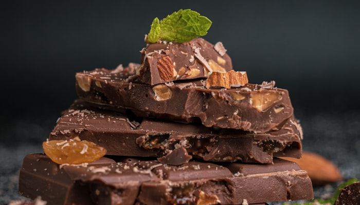
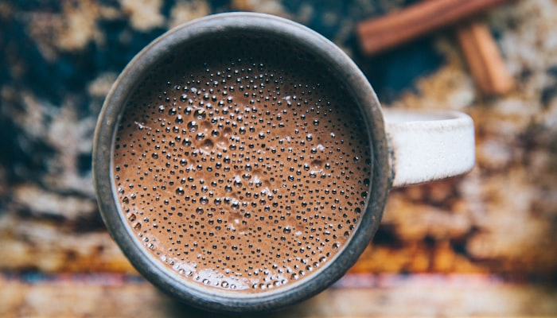
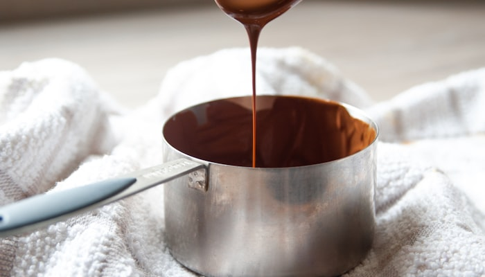
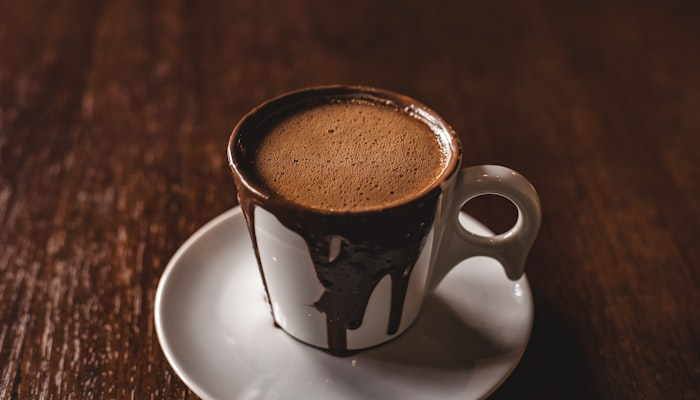

Tutoriales
Todo lo que necesitás saber para preparar y disfrutar tu cacao
Para empezar
Si es tu primera vez con el cacao ritual, estos tutoriales son tu punto de partida.

Tu primera taza de cacao ceremonial
El primer error que comete casi todo el mundo es hervir el agua. La temperatura ideal para preparar cacao ritual está entre 70 y 75°C: lo suficientemente caliente para disolver la pasta, pero sin destruir los compuestos activos que hacen al cacao tan especial. Si no tenés termómetro, dejá que el agua llegue a punto de hervor y esperá dos minutos antes de usarla.
La dosis estándar es de 28 a 42 gramos de pasta de cacao por taza de 250ml, lo que equivale aproximadamente a un cuarto o un tercio de una barra estándar. Para uso diario, 28g son suficientes. Para una experiencia más intensa, como una ceremonia o un ritual más profundo, podés llegar hasta los 42g. Rallá o picá la pasta en trozos pequeños antes de agregarla al agua para que se disuelva mejor.
El secreto de la textura cremosa está en el batido. Usá una licuadora de mano o una batidora de vaso durante al menos 30 segundos a máxima velocidad. El cacao emulsiona con el agua y genera una espuma natural que es la señal de que está bien preparado. Si no tenés licuadora, un batidor de globo y algo de brazo funcionan igual, aunque el resultado no será tan espumoso. Al final, una pizca de sal marina potencia el sabor y equilibra el amargor propio del cacao puro.

Cacao ritual vs chocolate: qué los diferencia
El chocolate comercial pasa por al menos cinco etapas de procesamiento que alteran profundamente su composición: fermentación, secado, tostado a altas temperaturas, molienda, y conchado, que es el amasado prolongado a 60-80°C durante horas o incluso días. Cada una de estas etapas degrada una parte de los compuestos activos. El proceso holandés, usado en el cacao alcalinizado de la mayoría de los chocolates en polvo del supermercado, destruye hasta el 90% de los flavonoides originales para suavizar el sabor amargo.
El cacao ritual se detiene mucho antes. Después de la fermentación y el secado, se tuesta a baja temperatura y se muele sin añadir nada más. El resultado es una pasta bruta que conserva la manteca de cacao, los sólidos y todos los polifenoles, teobromina, magnesio y anandamida en proporciones similares al grano original. El sabor es radicalmente distinto: amargo, denso, con notas terrosas y ligeramente ácidas que varían según el origen.
La diferencia no es solo química sino también de intención. El chocolate fue diseñado para ser agradable al paladar masivo: se endulza, se añade lecitina para mejorar la textura, se agregan sólidos de leche. El cacao ritual fue diseñado para ser efectivo, para producir un efecto real en el cuerpo y la mente. No están compitiendo en el mismo mercado ni apuntando al mismo propósito. Conocer esa diferencia cambia completamente la relación que tenés con ambos productos.

Los beneficios reales de la teobromina
La teobromina es el principal alcaloide del cacao y el responsable de su efecto energizante suave. Estructuralmente es muy similar a la cafeína (ambas son metilxantinas) pero actúa de manera diferente sobre el sistema nervioso: es un estimulante más suave y con una duración más larga, entre seis y diez horas, sin producir el pico de cortisol asociado a la cafeína. Para la mayoría de las personas, eso se traduce en un estado de atención sostenida y energía estable, sin el crash posterior ni la interrupción del sueño si se toma por la mañana.
Una taza de cacao ritual preparada con 35 gramos de pasta contiene entre 400 y 900mg de teobromina, dependiendo del origen y el procesado. Para contexto, una taza de café tiene entre 2 y 25mg (casi nada). La teobromina también es vasodilatadora, lo que significa que expande los vasos sanguíneos y mejora la circulación. Eso explica por qué mucha gente nota calor en el pecho y las manos durante los primeros veinte minutos después de tomar un cacao fuerte.
Además de la teobromina, el cacao puro tiene una concentración elevada de magnesio, un mineral del que la mayoría de la población tiene déficit. El magnesio interviene en más de trescientas reacciones enzimáticas del cuerpo y está especialmente relacionado con la relajación muscular, la regulación del cortisol y la calidad del sueño. También contiene feniletilamina (PEA), un neurotransmisor asociado al bienestar y la concentración, y anandamida, conocida como la molécula de la felicidad. Ninguno de estos compuestos está presente en cantidades significativas en el chocolate procesado.
Recetas con cacao
Más allá de la taza. El cacao ritual se integra fácilmente en tu alimentación diaria.
Smoothie energizante de cacao y plátano
Necesitás un plátano mediano congelado, una cucharada sopera de cacao en polvo ceremonial o 15g de pasta rallada, 250ml de leche de avena y una cucharada de mantequilla de maní. Opcional: una pizca de canela y media cucharadita de miel de caña. Licuá todo durante 45 segundos hasta que quede completamente homogéneo. El plátano congelado le da la textura cremosa sin necesidad de agregar hielo.
El resultado es un desayuno de 350-400 calorías con proteína, grasas saludables, fibra y la energía sostenida del cacao. Lo que no tiene es azúcar refinada ni ingredientes procesados. El plátano madura en el freezer de manera natural, así que si tenés plátanos que se están poniendo muy maduros en casa, ese es exactamente el momento para congelarlos. Pelalos antes de guardarlos, en bolsas con cierre.
Granola artesanal con nibs de cacao
Ingredientes para una tanda de cuatro días: 2 tazas de avena arrollada gruesa, media taza de nibs de cacao, media taza de semillas (girasol, zapallo, sésamo, lo que tengas), 3 cucharadas de aceite de coco derretido, 3 cucharadas de miel de caña o jarabe de maple, una cucharadita de canela y una pizca de sal. Mezclá todo en un bowl grande hasta que quede bien integrado, distribuí en una asadera y horneá a 160°C durante 20 minutos, revolviendo a mitad de cocción.
La clave es la temperatura baja. Si horneás a más de 180°C vas a quemar los nibs y van a perder todo su sabor complejo para quedar solo amargos. A 160°C la avena se tuesta de manera pareja y los nibs se integran al conjunto sin quemarse. Guardá en un frasco de vidrio hermético hasta una semana. Acompañá con yogur natural y frutas frescas, o cométela sola como snack a la tarde.

Trufas de cacao crudo con dátiles
Tres ingredientes base: 200g de dátiles Medjool sin carozo (si están secos, hidratarlos 10 minutos en agua tibia), 3 cucharadas de cacao en polvo ritual, y 2 cucharadas de mantequilla de almendras o maní. Procesá todo en una picadora hasta formar una masa compacta y algo pegajosa. Si la masa está muy seca, agregá de a poco leche de avena hasta que se pueda moldear. Armá bolitas del tamaño de una nuez y rebozá en cacao en polvo, coco rallado o nibs triturados.
Estas trufas no necesitan cocción ni refrigeración previa para consumirse, aunque aguantan hasta diez días en la heladera en un recipiente con tapa. Son una fuente de energía rápida por los azúcares naturales del dátil, equilibrada por la grasa de la mantequilla y el efecto moderador del cacao. Un par de trufas a las cuatro de la tarde funcionan mejor que cualquier barra energética del kiosco, con la diferencia de que sabés exactamente qué estás comiendo.
Nivel avanzado
Para quienes ya tienen práctica y quieren profundizar en el cacao como herramienta de bienestar.
Cómo crear tu ritual matutino de cacao
Un ritual no es una rutina. La diferencia está en la presencia. Podés preparar cacao todos los días de manera automática, en piloto, mientras mirás el teléfono, y eso es una rutina. Un ritual implica estar ahí mientras lo hacés: notar el vapor, el olor al disolver la pasta, la temperatura de la taza en las manos. Ese nivel de atención, aunque dure solo diez minutos, activa el sistema nervioso parasimpático y es en sí mismo una práctica de reducción del estrés.
Estructuralmente, un ritual matutino de cacao puede ser simple: levantarse antes de mirar el teléfono, preparar el cacao con intención (pausá antes de echar el agua, respirá), sentarte en silencio mientras lo tomás, y si querés sumar algo más, tres minutos de escritura libre o una intención para el día. No tiene que ser espiritual si eso no es lo tuyo. Puede ser simplemente el acto de comer algo sin distracción, que ya es radical en la cultura actual.
El cacao funciona bien como ancla del ritual porque tiene un efecto real y perceptible en el cuerpo. No es placebo. Los 20-30 minutos después de tomarlo son los mejores para el trabajo creativo o cualquier tarea que requiera foco, gracias a la combinación de teobromina más la vasodilatación que mejora el flujo sanguíneo al cerebro. Usá esa ventana deliberadamente y vas a notar la diferencia en tu productividad mañana.

Del árbol a la pasta: el procesado del cacao ritual
El árbol de cacao (Theobroma cacao, literalmente "alimento de los dioses") produce vainas directamente sobre el tronco y las ramas principales. Cada vaina contiene entre 25 y 50 semillas rodeadas de una pulpa blanca y azucarada. La cosecha es manual y ocurre dos veces al año. Después de abrir las vainas, las semillas se fermentan durante cinco a siete días en cajones de madera cubiertos con hojas de plátano. La fermentación es el paso más crítico: es lo que desarrolla los precursores del sabor y elimina el amargor extremo del grano crudo.
Después de la fermentación, las semillas se secan al sol durante una a dos semanas, lo que reduce la humedad al 7% y las estabiliza para el transporte. En el procesado ceremonial, el tostado se hace a temperatura baja (entre 110 y 130°C) y por tiempo corto. El tostado suave preserva los compuestos activos pero todavía desarrolla parte del sabor. A continuación se quita la cáscara (winnowing) y las semillas se muelen en molinos de piedra a temperatura controlada hasta obtener la pasta o licor de cacao. En ese punto, el proceso ceremonial termina. No se separa la manteca, no se añade nada, no se refina más. Lo que tenés es el grano completo en forma de pasta, listo para consumir.

Cómo elegir tu cacao según tu perfil
El primer criterio es el origen. Los cacaos mesoamericanos (México, Guatemala) tienden a ser más intensos, más amargos y con notas terrosas y ahumadas. Los cacaos de Ecuador, especialmente la variedad Nacional o Arriba, son más suaves, con notas florales, frutadas y a veces casi achocolatadas. Los cacaos del Perú tienen un rango amplio pero suelen ser equilibrados, con acidez media. Si es tu primera vez, un cacao ecuatoriano es más accesible en sabor; si ya tenés experiencia y querés potencia, buscá uno de Tabasco o Chiapas.
El segundo criterio es el procesado. No todo lo que se vende como "cacao ritual" lo es. Revisá si el productor especifica la temperatura de tostado, si la molienda es en frío o controlada, y si la pasta es 100% cacao sin aditivos. Desconfiá de los cacaos ceremoniales que tienen un sabor muy dulce o muy suave: en general indican que fueron procesados a mayor temperatura o que contienen algún porcentaje de azúcar o vainilla añadida. Una buena pasta de cacao ceremonial tiene que ser intensa, algo amarga y dejar una sensación cálida en el pecho pocos minutos después de tomarlo.